Anonymous orbital animation · study 002

Standalone local preview. No external data, scripts or tracking. The image source switches to a motion-free SVG when reduced motion is requested.

Standalone local preview. No external data, scripts or tracking. The image source switches to a motion-free SVG when reduced motion is requested.